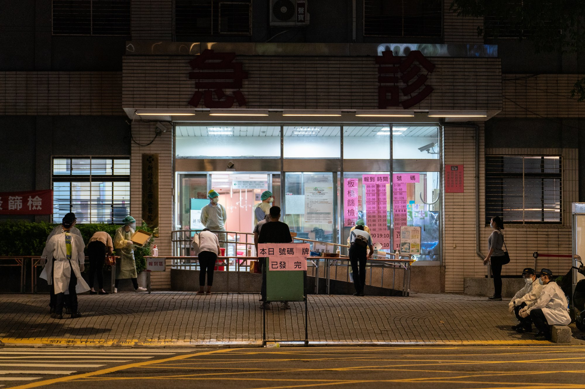

如何運用認知再評估策略幫助疫情之下的民眾調節負面情緒
本文分享的情緒調節指引來自最新心理學理論研究，運用條件有限，請留意關於應用限制的說明。若遭遇個人無法自行調適的壓力狀況，請務必向專業心理諮商人員或精神科醫師尋求協助。
參加的源由
2020年三月COVID-19全球疫情大爆發之後，世界各國因疫情而封城，學校停止實體上課，我參與的心理科學加速器各國成員主持的實驗室也停止運作。當時主席Crhis Chartier教授順勢徵求能探討全球人類面對疫情，如何調適個人心理狀態的合作研究案。經過一個月的徵求與評審計畫過程，選出由來自明尼蘇達大學、哈佛大學、史丹佛大學的學者所規劃的認知再評估調查計畫。
這項計畫在去年(2020)十月完成資料收集，今年五月初完成報告並正式投稿Nature Human Behavior。在台灣面對疫情嚴峻的當下，正好可以分享研究發現，給台灣民眾一點調適自身情緒狀態的建議。也讓台灣的心理學研究人員，認識非機構主導的合作研究模式。

Figure 1: 收集世界各地疫情影像，全球各地心理學者探討認知再評估策略能否幫助人們調適焦慮情緒。影像取自報導者科學防疫的缺口。
認知再評估的策略設定及調查方法
認知再評估(cognitive reappraisal)是一種情緒調節策略(emotional regulation)：當個人面對突發壓力事件，重新定位個人思考重點以調節自身情緒狀態。有自主思考思識的個人都可應用這種策略，處理突發壓力事件引發的焦慮與恐慌情緒。
心理科學加速器的研究案測試兩種再評估策略：重新建構(Reconstrual)與重設目標(Repurposing)能否有效減少負面情緒，以及增加正面情緒。想像你現在因為確診，或者接觸已經確診的個案，必須馬上隔離。為了處理如此情境帶來的恐慌感受，採取重新建構策略是用另一種方式解讀或思考當前處境會帶來不一樣的情緒～你可以告訴自己現在的情況只是暫時的，再過一陣子就可以打疫苗了；採取重設目標是嘗試找到能帶來正向感受的目標～你可以告訴自己，這樣一來就有了更多時間去做以前無法做的事情，像是閱讀，繪畫、或者陪伴家人。根據計畫的文獻考察過去研究發展的理論，重新建構有助減少負面情緒，重設目標能增加正面情緒。
這項研究透過調查問卷的指導語，讓參與者了解如何使用其中一種策略。問卷內容是請參與者觀看當時來自世界各地的疫情新聞照片，評估看到照片的情緒感受。為了測試兩種策略的效用，研究者設定兩種控制條件：一種主動控制條件(active control)是主動引導參與者意識看到照片時的想法，另一種被動控制條件(passive control)並未提示任何指引，進行如同其他條件的都有的暖身題前後，只有提示完成調查的步驟。
參加調查的民眾填寫的問卷會隨機收到以上其中一種指導語，要回答的問題種類包括對每張新聞照片的情緒感受；結束回答問卷時的情緒狀態；完成調查後對於當前疫情懷抱希望的程度。所有問題的回答選項有正面及負面兩種版本，參與者也是隨機採用其中一種回答選項，表達個人的情緒感受及期望。
假設與分析計畫
主要計畫主持人採用註冊報告規劃，設定四項確證性假設及分析計畫，以及兩種探討索性題目。
確證性假設
前二項假設預測兩種再評估策略減少的負面情緒感受，以及增加的正面情緒感受，都會明顯高於兩種控制條件。也就是說，研究者團隊預期回答選項是負面版本的狀況，接收再評估策略指導語的參與者回答「一點也不負面」的次數，會多於接收控制條件指導語的參與者。如果回答選項是正面版本，接收再評估策略指導語的參與者回答「極為正面」的次數會多於控制條件的參與者。
後二項假設比較兩種再評估策略降低負面情緒感受，以及增加正面情緒感受的程度。根據重新建構與重設目標的設定，前者較能有效減低負面情緒，所以填寫負面版本回答選項的參與者，看過重新建構指導語而回答「一點也不負面」的次數，會高於看過重設目標指導語的參與者；後者被認為較能有效增加正面情緒，因此填寫正面版本回答選項的參與者，看過重設目標指導語而回答「極為正面」的次數，會多於看過重新建構指導語的參與者。
情緒感受的測量方法是依新聞照片的情緒感受、結束回答問卷時的情緒感受、對於當前疫情懷抱希望的程度等三類問題，總和參與者報告分數，分別依四項假設的比較目標，判定統計結果。為了維持最高證據力，判定符合假設預測的水準包括p值小於.001，貝氏因子log值要大於2。
探索性問題
探索性問題沒有明確的預測，是研究者認為值得藉這項研究收資料，增加再評估策略的理論視野，還有了解再評估策略能在當前的疫情情境發揮的效用。本文摘要其中兩項問題，第一項探討再評估策略的潛在效應，分為四個方面：包括參與者在日常生活落實勤洗手、帶口罩等非藥物介入措施(NPI)的動機；自認在回答過程中採用再評估策略的主觀次數；開始閱讀指導語前的情緒狀態，與完成問卷填寫之後的情緒狀態差異；還有個人對於未來數週情緒狀態的預期。第二項探討世界各國封城政策，還有參與者填寫問卷時的生活狀況(像是正好處於集中檢疫或居家隔離)等差異，會如何影響再評估策略的效用？
結果摘要
研究結果只有支持前二項確證性假設，也就是說兩種再評估策略顯著降低負面情緒感受，還有提昇正面情緒感受；但是並未顯示重新思考比起重新聚焦能顯著減少負面情緒感受，重新聚焦也並未比重新思考顯著增加正面情緒感受。因此以調查程序來看，不管採用這次研究的那一種認知再評估策略，都能調節人們對疫情影像與完成問卷時的情緒感受，還有對當下疫情狀況的態度。
兩種探索性問題的分析看起來有正面意義。認知再評估的潛在效應分析顯示：不論參與者接收到指導語是再評估策略或控制條件，落實NPI的意願並沒有差異；指導語是再評估策略的參與者，自認在調查過程採用指導語策略的參與者，明顯多於控制條件的參與者、而且完成問卷時的情緒狀態評估，顯著比剛開始的狀態更正面、還有對未來數週的預期也比較樂觀。至於參與者當地狀況對認知再評估策略效用的影響，研究者以負面情緒狀況評估為依變項，混合線性模型分析顯示參與者所在地區封城狀況、自我隔離狀況的解釋變異量(\(R^2\) = 0.001 ~0.003)，只有再評估效用的解釋變異量的10%(\(R^2\) = 0.013)。這似乎說明即使遇到無法接觸親朋好友的隔離狀況，只要還有自我意識，運用認知再評估策略還是能幫助自己調整情緒狀態。
應用的限制
註冊報告強調研究者必須以事前設定的方法分析資料，以及判斷原則解讀研究結果。因此讀者必須了解這項全球研究結果得出的結論，要不要使用在個人狀況必須先了解以下條件。
首先根據事前的考驗力及樣本數估計分析，一個國家/地區的參與者至少要200人，該國家/地區的資料才能進入正式分析。這次台灣地區並未收足200人，所以未進入正式資料分析。台灣地區參與者的資料並無呈現在研究報告的認知再評估效用。
探索性分析的結果也許是讀者想知道的，但是要了解這些潛在效用可能因為下列限制，不能高估應用價值：
-
所有情緒感受的回答只是填寫問卷的參與者，個人當時的狀態。
-
調查程序不同於標準的認知(再)評估程序，且受限於問卷長度及保障參與者隱私等倫理條件，這項研究並未充分調查參與者當下面對的壓力事件造成的焦慮程度。
-
基於以上事實，對於住院或隔離期間的人們想要每天使用再評估策略，這份研究無法給明確答案。長期運用的效用，需要搭配深度晤談或觀察等方法進一步研究。
-
本研究使用的重新建構與重設目標的中文指導語設計，並未與國內臨床諮商心理學者討論。要評估在台灣社會運用的效用，還需要進行人數更多的本土研究。
因為心理科學加速器的任何研究案都是公開且可重製。有興趣分析資料的人士可以從osf專案網頁取得全部資料，以及分析的程式碼。同一個網頁的資料夾也可取得問卷題本，有興趣的研究者可運用這些材料設計更為本土化的問題。
最後再次提醒，本研究的運用條件有限，請留意關於應用限制的說明。若遭遇個人無法自行調適的壓力狀況，請務必向專業心理諮商人員或精神科醫師尋求協助。